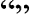

'The Good Night' Kitap Blogu

'Denemeler' Kitabından Alıntılar
 Bundan sonra halim ancak yarım bir varlık olacak ve ben artık o ben olmayacağım. Gün geçtikçe kendimden ayrılıyor, uzaklaşıyorum. (2. sf.)
Kendini olduğundan az göstermek, tevazu değil budalalıktır; kendine değerinden az paha biçmek korkaklıktır, pısırıklıktır. (7. sf.)
Kanunlar doğru oldukları için değil, kanun oldukları için yürürlükte kalırlar. ...Kanunlardan daha çok, daha ağır, daha geniş haksızlıklara yol açan ne vardır? (14. sf.)
Benim yükseklerde gözüm yoktur, ama Roma'da başka türlü yaşanmaz, deriz; ben gösteriş sevmem, ama şehir öyle istiyor, deriz; öfkeliysem, güvenli bir hayat kuramadıysam suç bende değil, gençlikte, deriz. Dışımızda aramayalım kötülüğü, içimizdedir o; ciğerimize işlemiştir. (75. sf.)
Dünyaya geldiğiniz gün bir yandan yaşamaya, bir yandan ölmeye başlarsınız. (110. sf.)
'Othello' Kitabından Alıntılar
Yas tutmak gelmiş geçmiş yaramazlıklara, Yol açar kısa yoldan yeni mutsuzluklara. Kader alıp götürürse elde tutamadığımızı, Soğukkanlılık alaya alır kaderin zararını. Soyulduğunda gülen, hırsızdan bir şey çalar, Boş yere kederlenen, kendi kendini soyar.
Bedenimiz bahçemizdir, irademiz de bahçıvanı, ister ısırgan dikersin, ister kekik, ister hıyar yetiştirir, kabak ekersin, bahçeni ya tek bir bitkiye ayırır ya da bir sürü çiçekle doldurabilirsin, yeter ki sen iste ! Bahçenin kısır kalması da elinde, verimli, bakımlı, olması da. Bunların hepsini yapmak irademize bakar.
Başlangıcı birdenbire olanın sonu da çabuk gelir.
Hem güzel, hem akıllıysa bir kadın, bilir Güzelliği kullanılmak, aklı kullanmak için
-Ya bir kadın çirkin ve akıllıysa?
Çirkinse eğer, ama aklı varsa ona yetecek, Mutlaka bir güzel bulur çirkinliğini örtecek.
-Ya güzel, ama aptal olursa?
Güzel olan kadına daha hiç aptal denilmemiştir, Hatta aptallığı sayesinde çocuk bile edinmiştir.
Yüreğinizden vurdular sizi, ruhunuzun yarısı uçtu elden.
Hey koca Tanrım! Biz insanlar, ağızlarımızın içine şeytan sokuyoruz, kapıp kaçsınlar diye akıllarımızı!
Şu sabırsızlar da hep böyle akıldan yana yoksundurlar; Hangi yara birdenbire iyileşmiştir?
'Senden Önce Ben' Kitabından Alıntılar
Beni o kadar da sık düşünme.Seni sulu gözlü bir şekilde hatırlamak istemiyorum.Sadece iyi yaşa. Sadece yaşa.
Yavaşça gözlerini kapadı. Gözlerinin etrafındaki o çizgilerin, o her şeyden vazgeçmiş ifadenin ne söylediğini biliyordum. Başka bir zaman olmayacağını, bir daha asla iyileşmeyeceğini düşündüğünü söylüyorlardı.
Onsuz yaşamaktan korktuğumu fark ettim. Benim hayatımı yıkmaya ne hakkın var, demek istiyordum. Benim senin hayatın üzerinde hiçbir şey söylemeye hakkım yokken bunu yapmaya ne hakkın var?
Babamı keşke daha önce dinleseydim. Her zaman, 'Kötü deneyimlere rağmen hâlâ bir umut olduğunu görmek istiyorsan dışarı ailecek geçirilecek eğlenceli bir gün ayarla', derdi.
İnsanları olduklarından farklı birine çeviremezsin.

'Yerlesik Düsünceler Sözlügü' Kitabından Alıntılar
Flaubert, yalnızca toplum yapısındaki akılsızlıklara değil, kalıplaşmış biçimde düşünmenin düşüncesizliğine de nişan alır. Günümüzde yaşasaydı, siyaset ve dilde konuşma adabının gülünçlüklerini sıralardı bir bir. Geçenlerde bir Amerikan gazetesi, bir insanı betimlerken "normal" sözcüğünün kullanımından kaçınılmasını öğütleyen, çünkü bu kullanımın, öbür insanların anormal olabileceğini ima ettiğini ileri süren bir kılavuz kitap yayımladı. Sahne gerisinden gelen gürültü Flaubert'in kahkahasıydı.
Deha,hayran olmaya gerek yok;sinirsel bir hastalıktır.
Bahse girerim ki kamuya mal olmuş her düşünce, benimsenmiş her uzlaşım bir saçmalıktır, çünkü çoğunluğa uygun gelmiştir.
Herkesin kendi yıldızı vardır.
İntihar: korkaklığın kanıtıdır.
MELANKOLİ: Seçkin bir kalbin ve üstün bir aklın göstergesidir.

'Hayvan Çiftligi' Kitabından Alıntılar
Söylediğiniz şeye katılmıyorum ama onu söyleme hakkınızı hayatım pahasına savunacağım!
İnsan ile hayvanların ortak çıkarı vardır, birinin dirliği öbürlerinin de dirliğidir, diyen çıkabilir. Onlara sakın kulak asmayın. Hepsi yalan. İnsanoğlu, kendinden başka hiçbir yaratığın çıkarını gözetmez.
Özgürlüklerini savunamayanların ödedikleri bedel ağırdır.
Kimsenin düşüncelerini söylemeye cesaret edemediği bir devir gelmişti.
En iyi insan, ölü insandır.
Insan üretmeden tüketen tek yaratıktır. Süt vermez, yumurta yumurtlamaz.Sabanı çekecek gücü yoktur.Tavşanı yakalayacak kadar da hızlı koşamaz.Gene de tüm hayvanların efendisidir.
Gerçek mutluluk çok çalışmakta ve sade yaşamaktadır.